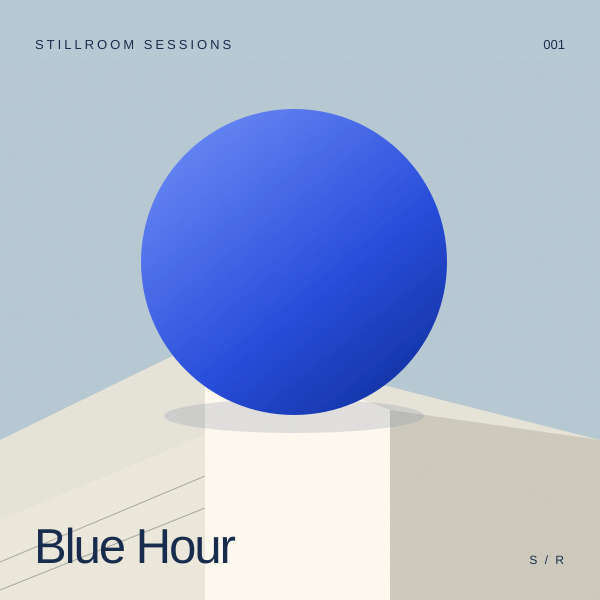
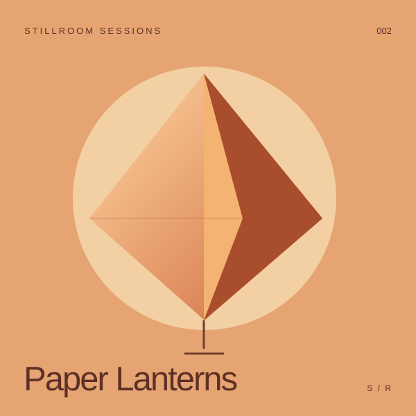
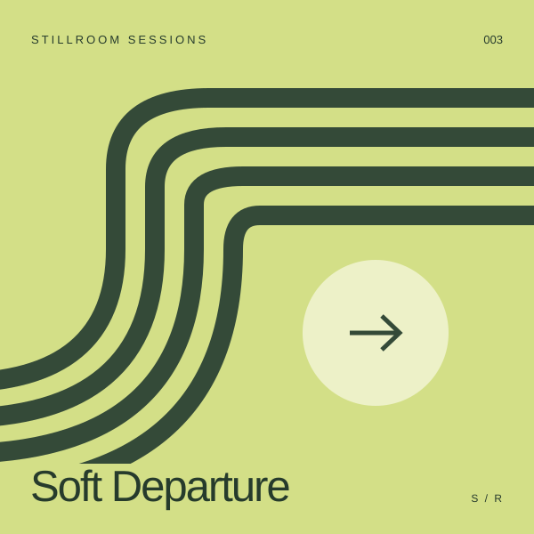

INDEPENDENT PRODUCT DESIGN / 2026
Designing a little
room to listen.
A music player built around a simple question: what if finding something to hear felt less like browsing a warehouse, and more like choosing a record?



01 / THE BRIEF
Beyond the play button.
Turn a music-player exercise into a complete, coherent product experience.
The starting brief called for a Spotify-inspired interface and a connected mobile prototype. I used familiar playback conventions, then gave the product its own premise: a deliberately small listening room, with a finite edit and clear control over what comes next.
This is a self-directed concept, built with AI-assisted implementation and asset generation. There was no client, research panel, or commercial launch. The work demonstrates design judgment and implementation, not measured market impact.
02 / THE HYPOTHESIS
Make choosing feel lighter.
The intended listener wants a short break, focused background music, or a gentle change of pace. The product hypothesis is that a finite, mood-led selection can reduce the work of choosing. That hypothesis still needs participant testing.
The primary action starts the complete edit. Search and mood filters support a more specific intention. A saved collection and named sessions provide a reason to return without inventing a recommendation engine.
03 / DESIGN DECISIONS
Small choices.
One clear character.
An editorial shelf, not a streaming clone.
Warm paper, oversized typography, original geometric sleeves, and a visible record motif make the brand distinct. Cobalt marks action. Album art carries color; the interface gives it space.
A small catalog with real content.
Three full instrumental compositions were generated in Suno for this project. They offer distinct listening moods. There are no fictional popularity scores, fake artists, or unavailable tracks hiding behind polished cards.
Control stays in reach.
A persistent player supports browsing without losing playback. On narrow screens it keeps the essentials visible; Now Playing reveals the larger transport controls. Queue reordering uses explicit buttons instead of requiring drag gestures.
Protection means preserving intent.
Locking the queue prevents accidental reordering, removal, shuffle, or replacement. Playback continues. This is an interaction safeguard, not an authentication or security feature.
Private by architecture.
Local audio uses browser object URLs. Files are not uploaded. Favorites, appearance, volume, and named sessions use local browser storage. No account, analytics SDK, or backend is required.
04 / DESIGN TO CODE
A system that travels.
Figma contains semantic light/dark variables, reusable action and filter states, an editable desktop composition, and eight connected mobile states. The browser implementation uses the same color vocabulary, bundled typefaces, and original sleeve artwork.
| DESIGN INTENT | IMPLEMENTATION |
|---|---|
| Intentional selection | Search and mood filters combine. Empty states give a clear reset path. |
| Continuous listening | One audio element persists across hash-based views. Navigation does not restart music. |
| Predictable playback | Explicit end-of-queue, repeat-one, repeat-all, and shuffle behaviors are tested. |
| Recoverable errors | Playback failures announce a recovery path; malformed storage falls back to safe defaults. |
| Responsive hierarchy | Desktop sidebar becomes mobile navigation. Large covers become compact track rows. |
Figma represents selected design states; the web app is the functional reference. This is not a claim of pixel-perfect parity or a production streaming service.
05 / VALIDATION
Evidence, with boundaries.
Automated tests cover the player’s pure queue and preference logic. The repository includes a separate validation record so completed checks and remaining work can be reviewed without treating a polished screen as proof.
| AREA | APPROACH |
|---|---|
| Core logic | Node tests for queue end, repeat, shuffle, reorder, filter combinations, invalid metadata, and storage recovery. |
| Interaction design | Semantic controls, native dialogs, labeled ranges, keyboard transport, visible focus, reduced-motion rules. |
| Manual verification | Recorded in the validation log ↗. |
| Not yet established | Participant usability findings, a complete assistive-technology audit, and full cross-browser/device coverage. |
No task-success percentages, engagement improvements, accessibility certification, or research quotes are claimed.
06 / TRADEOFFS
What I would test next.
Does the small edit help people decide?
Ask participants to choose music for a specific situation. Observe hesitation, interpretation of mood labels, and whether they notice the complete-session action. Compare against a simple unfiltered track list before making any claim about reduced effort.
Is queue protection clear without explanation?
Ask participants to rearrange, lock, and then try to modify a queue. Check whether the lock’s scope is understood and whether the unlock path is discoverable. Test with keyboard and touch.
What happens as the catalog grows?
The current catalog validates a small experience, not large-library information architecture. A larger version would need pagination, richer metadata, scalable search, rights management, and performance measurements.
What does production require?
Account sync, durable playlists, licensed distribution, monitoring, content delivery, offline strategy, and a broader accessibility and browser test matrix. Browser-only storage is intentionally simple and does not promise cross-device recovery.